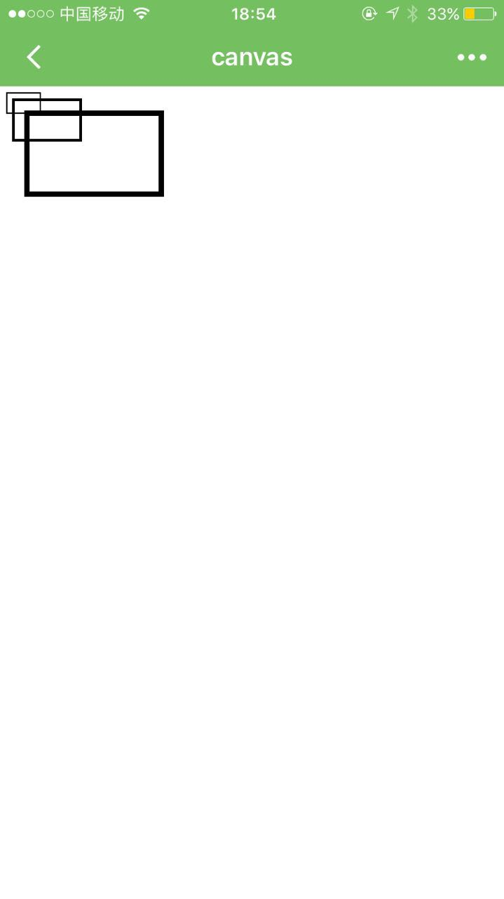
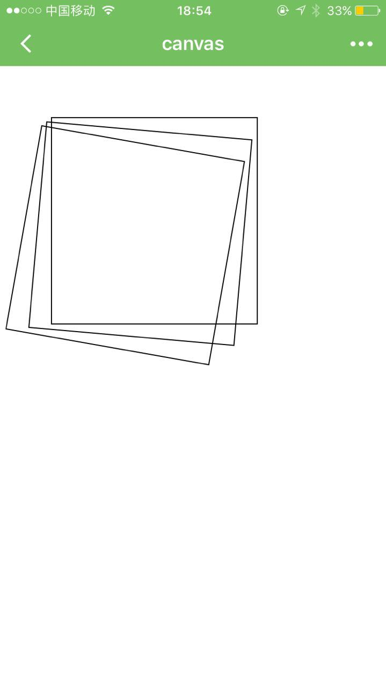
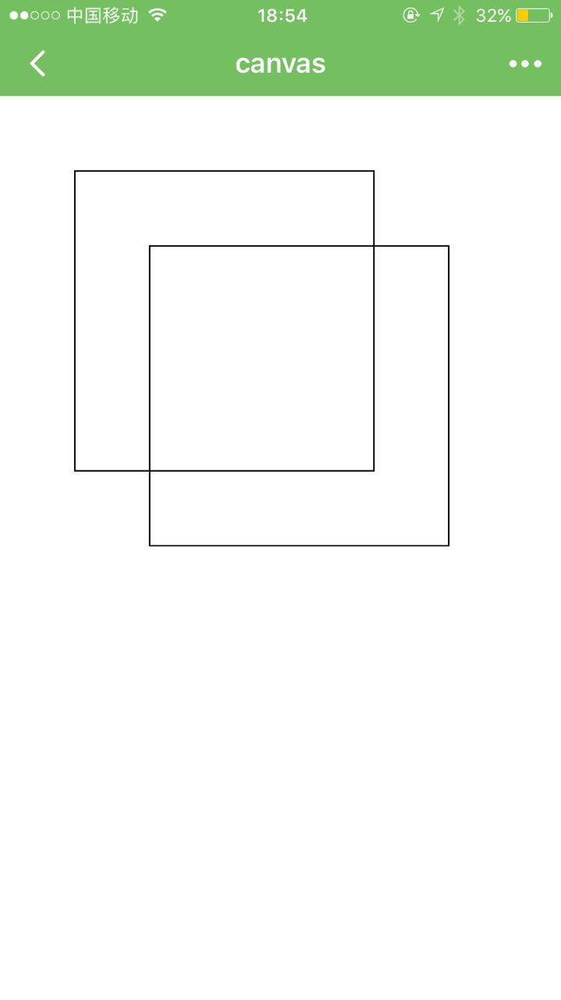
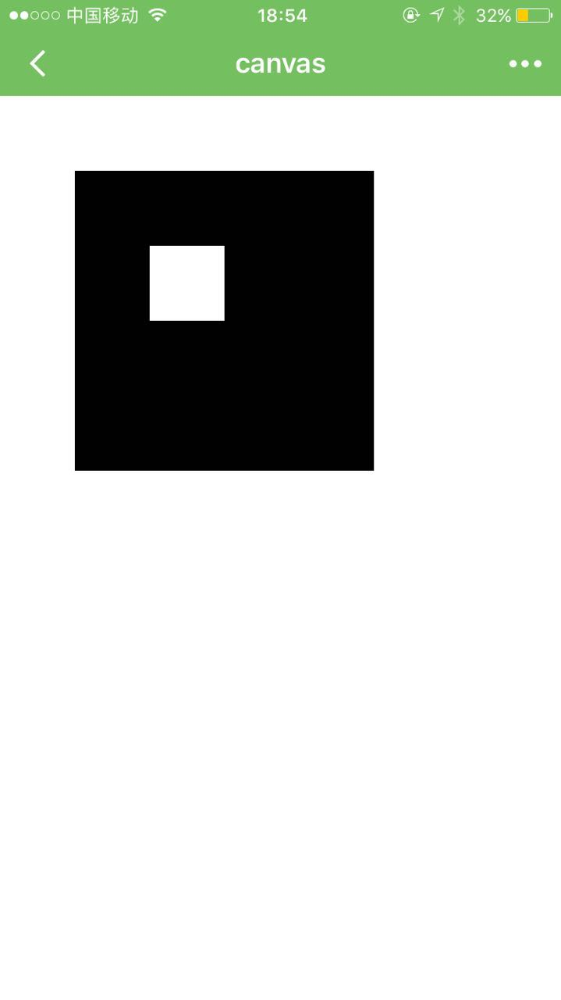
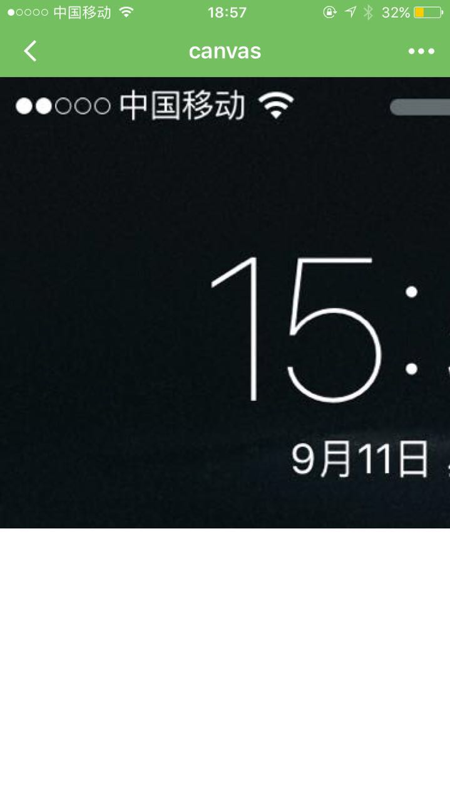
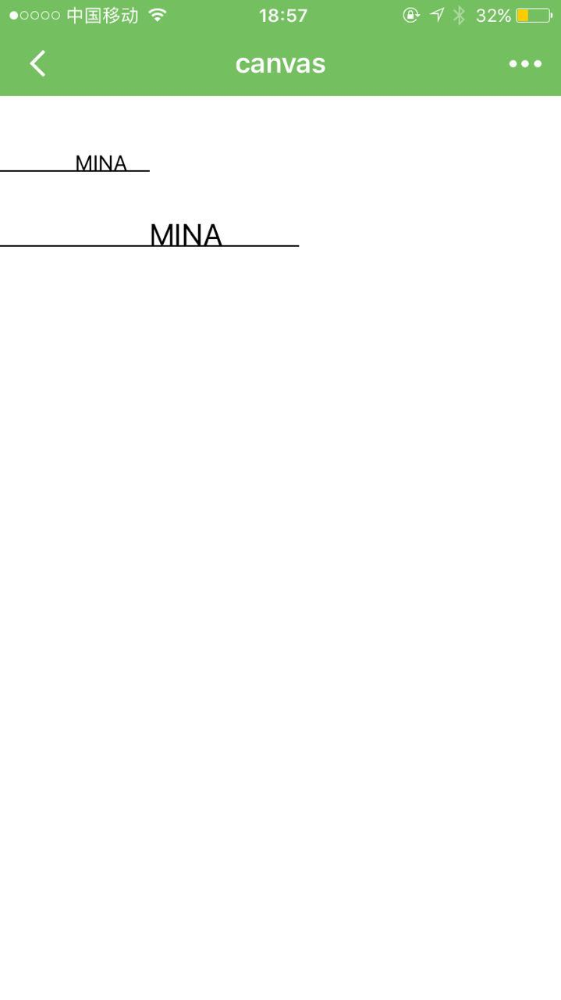
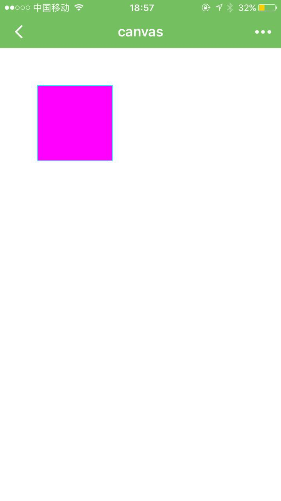
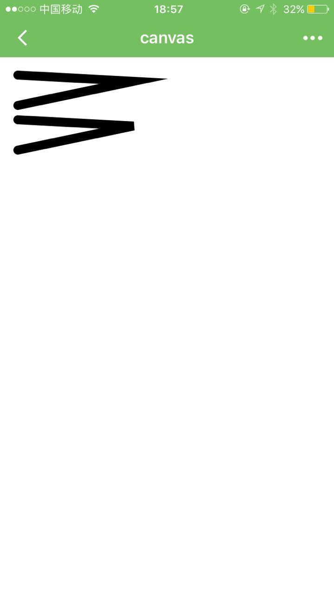

wx.createContext()
创建并返回绘图上下文context对象。
context
context只是一个记录方法调用的容器，用于生成记录绘制行为的actions数组。context跟<canvas/>不存在对应关系，一个context生成画布的绘制动作数组可以应用于多个<canvas/>。
// 假设页面上有3个画布
var canvas1Id = 3001;
var canvas2Id = 3002;
var canvas3Id = 3003;
var context = wx.createContext();
[canvas1Id, canvas2Id, canvas3Id].forEach(function (id) {
context.clearActions();
// 在context上调用方法
wx.drawCanvas({
canvasId: id,
actions: context.getActions();
});
});context对象的方法列表：
| 方法 | 参数 | 说明 |
|---|---|---|
| getActions | 无 | 获取当前context上存储的绘图动作 |
| clearActions | 无 | 清空当前的存储绘图动作 |
| 变形 | ||
| scale | 对横纵坐标进行缩放 | |
| rotate | 对坐标轴进行顺时针旋转 | |
| translate | 对坐标原点进行缩放 | |
| save | 无 | 保存当前坐标轴的缩放、旋转、平移信息 |
| restore | 无 | 恢复之前保存过的坐标轴的缩放、旋转、平移信息 |
| 绘制 | ||
| clearRect | 在给定的矩形区域内，清除画布上的像素 | |
| fillText | 在画布上绘制被填充的文本 | |
| drawImage | 在画布上绘制图像 | |
| fill | 无 | 对当前路径进行填充 |
| stroke | 无 | 对当前路径进行描边 |
| 路径 | ||
| beginPath | 无 | 开始一个路径 |
| closePath | 无 | 关闭一个路径 |
| moveTo | 把路径移动到画布中的指定点，但不创建线条。 | |
| lineTo | 添加一个新点，然后在画布中创建从该点到最后指定点的线条。 | |
| rect | 添加一个矩形路径到当前路径。 | |
| arc | 添加一个弧形路径到当前路径，顺时针绘制。 | |
| quadraticCurveTo | 创建二次方贝塞尔曲线 | |
| bezierCurveTo | 创建三次方贝塞尔曲线 | |
| 样式 | ||
| setFillStyle | 设置填充样式 | |
| setStrokeStyle | 设置线条样式 | |
| setShadow | 设置阴影 | |
| setFontSize | 设置字体大小 | |
| setLineCap | 设置线条端点的样式 | |
| setLineJoin | 设置两线相交处的样式 | |
| setLineWidth | 设置线条宽度 | |
| setMiterLimit | 设置最大倾斜 |
方法详解：
scale
在调用scale()方法后，之后创建的路径其横纵坐标会被缩放。多次调用scale，倍数会相乘。
| 参数 | 类型 | 范围 | 说明 |
|---|---|---|---|
| scaleWidth | Number | 1=100%，0.5=50%，2=200%，依次类推 | 横坐标缩放的倍数 |
| scaleHeight | Number | 1=100%，0.5=50%，2=200%，依次类推 | 纵坐标轴缩放的倍数 |
示例代码：下载
<!--scale.wxml -->
<canvas canvas-id="1" />//scale.js
Page({
onReady:function(e){
var context = wx.createContext();
context.rect(5,5,25,15)
context.stroke();
context.scale(2,2); //再放大2倍
context.rect(5,5,25,15);
context.stroke();
context.scale(2,2); //再放大2倍
context.rect(5,5,25,15)
context.stroke();
wx.drawCanvas({
canvasId:1,
actions:context.getActions()
});
}
})
rotate
以原点为中心，原点可以用translate方法修改。顺时针旋转当前坐标轴。多次调用rotate，旋转的角度会叠加。
| 参数 | 类型 | 范围 | 说明 |
|---|---|---|---|
| rotate | Number | degrees * Math.PI/180；degrees范围为0~360 | 旋转角度，以弧度计 |
示例代码：下载
//rotate.js
Page({
onReady:function(e){
var context = wx.createContext();
context.rect(50,50,200,200)
context.stroke();
context.rotate(5*Math.PI/180)
context.rect(50,50,200,200)
context.stroke();
context.rotate(5*Math.PI/180)
context.rect(50,50,200,200)
context.stroke()
wx.drawCanvas({
canvasId:1,
actions:context.getActions()
});
}
})
translate
对当前坐标系的原点(0, 0)进行变换，默认的坐标系原点为页面左上角。
| 参数 | 类型 | 范围 | 说明 |
|---|---|---|---|
| x | Number | 水平坐标平移量 | |
| y | Number | 竖直坐标平移量 |
示例代码：下载
//translate.js
Page({
onReady:function(){
var context = wx.createContext();
context.rect(50,50,200,200)
context.stroke()
context.translate(50,50)
context.rect(50,50,200,200)
context.stroke();
wx.drawCanvas({
canvasId:1,
actions:context.getActions()
});
}
})
clearRect
清除画布上在该矩形区域内的内容
| 参数 | 类型 | 范围 | 说明 |
|---|---|---|---|
| x | Number | 矩形区域左上角的x坐标 | |
| y | Number | 矩形区域左上角的y坐标 | |
| width | Number | 矩形区域的宽度 | |
| height | Number | 矩形区域的高度 |
示例代码：下载
//clearrect.js
Page({
onReady:function(){
var context = wx.createContext();
context.rect(50,50,200,200)
context.fill()
context.clearRect(100,100,50,50)
wx.drawCanvas({
canvasId:1,
actions:context.getActions()
});
}
})
drawImage
绘制图像，图像保持原始尺寸。
| 参数 | 类型 | 范围 | 说明 |
|---|---|---|---|
| imageResource | String | 通过chooseImage得到一个文件路径或者一个项目目录内的图片 | 所要绘制的图片资源 |
| x | Number | 图像左上角的x坐标 | |
| y | Number | 图像左上角的y坐标 |
示例：下载
//drawimage.js
Page({
onReady:function(e){
var context = wx.createContext();
wx.chooseImage({
success:function(res){
context.drawImage(res.tempFilePaths[0],0,0)
wx.drawCanvas({
canvasId:1,
actions:context.getActions()
});
}
})
}
})
fillText
在画布上绘制被填充的文本。
| 参数 | 类型 | 范围 | 说明 |
|---|---|---|---|
| text | String | 在画布上输出的文本 | |
| x | Number | 绘制文本的左上角x坐标位置 | |
| y | Number | 绘制文本的左上角y坐标位置 |
示例代码：下载
//filltext.js
Page({
onReady:function(){
var context = wx.createContext();
context.setFontSize(14)
context.fillText("MINA",50,50)
context.moveTo(0,50)
context.lineTo(100,50)
context.stroke();
context.setFontSize(20)
context.fillText("MINA",100,100)
context.moveTo(0,100)
context.lineTo(200,100)
context.stroke();
wx.drawCanvas({
canvasId:1,
actions:context.getActions()
});
}
})
beginPath
开始创建一个路径，需要调用fill或者stroke才会使用路径进行填充或描边。同一个路径内的多次setFillStyle、setStrokeStyle、setLineWidth等设置，以最后一次设置为准。
closePage
关闭一个路径。
moveTo
把路径移动到画布中的指定点，不创建线条。
| 参数 | 类型 | 范围 | 说明 |
|---|---|---|---|
| x | Number | 目标位置的x坐标 | |
| y | Number | 目标位置的y坐标 |
lineTo
在当前位置添加一个新点，然后在画布中创建从该点到最后指定点的路径。
| 参数 | 类型 | 范围 | 说明 |
|---|---|---|---|
| x | Number | 目标位置的x坐标 | |
| y | Number | 目标位置的y坐标 |
rect
添加一个矩形路径到当前路径。
| 参数 | 类型 | 范围 | 说明 |
|---|---|---|---|
| x | Number | 矩形路径左上角的x坐标 | |
| y | Number | 矩形路径左上角的y坐标 | |
| width | Number | 矩形路径的宽度 | |
| height | Number | 矩形路径的高度 |
arc
添加一个弧形路径到当前路径，顺时针绘制。
| 参数 | 类型 | 范围 | 说明 |
|---|---|---|---|
| x | Number | 矩形路径左上角的x坐标 | |
| y | Number | 矩形路径左上角的y坐标 | |
| radius | Number | 矩形路径的宽度 | |
| startAngle | Number | 弧度, 0到2pi | 起始弧度 |
| sweepAngle | Number | 弧度, 0到2pi | 从起始弧度开始，扫过的弧度 |
quadraticCurveTo
创建二次贝塞尔曲线路径。
| 参数 | 类型 | 范围 | 说明 |
|---|---|---|---|
| cpx | Number | 贝塞尔控制点的x坐标 | |
| cpy | Number | 贝塞尔控制点的y坐标 | |
| x | Number | 结束点的x坐标 | |
| y | Number | 结束点的y坐标 |
bezierCurveTo
创建三次方贝塞尔曲线路径。
| 参数 | 类型 | 范围 | 说明 |
|---|---|---|---|
| cp1x | Number | 第一个贝塞尔控制点的 x 坐标 | |
| cp1y | Number | 第一个贝塞尔控制点的 y 坐标 | |
| cp2x | Number | 第二个贝塞尔控制点的 x 坐标 | |
| cp2y | Number | 第二个贝塞尔控制点的 y 坐标 | |
| x | Number | 结束点的 x 坐标 | |
| y | Number | 结束点的 y 坐标 |
setFillStyle
设置纯色填充。
设置颜色为填充样式
| 参数 | 类型 | 范围 | 说明 |
|---|---|---|---|
| color | String | 'rgb(255, 0, 0)'或'rgba(255, 0, 0, 0.6)'或'#ff0000'格式的颜色字符串 | 设置为填充样式的颜色 |
setStrokeStyle
设置纯色描边，参数同setFillStyle。
示例代码：下载
//setfillstyle.js
Page({
onReady:function(e){
var context = wx.createContext();
context.setFillStyle("#ff00ff");
context.setStrokeStyle("#00ffff");
context.rect(50,50,100,100)
context.fill()
context.stroke()
wx.drawCanvas({
canvasId:1,
actions:context.getActions()
});
}
})
setShadow
设置阴影样式。
| 参数 | 类型 | 范围 | 说明 |
|---|---|---|---|
| offsetX | Number | 阴影相对于形状在水平方向的偏移 | |
| offsetY | Number | 阴影相对于形状在竖直方向的偏移 | |
| blur | Number | 0~100 | 阴影的模糊级别，数值越大越模糊 |
| color | Color | 'rgb(255, 0, 0)'或'rgba(255, 0, 0, 0.6)'或'#ff0000'格式的颜色字符串 | 阴影的颜色 |
setFontSize
设置字体的字号。
| 参数 | 类型 | 范围 | 说明 |
|---|---|---|---|
| fontSize | Number | 字体的字号 |
setLineWidth
设置线条的宽度。
| 参数 | 类型 | 范围 | 说明 |
|---|---|---|---|
| lineWidth | Number | 线条的宽度 |
setLineCap
设置线条的结束端点样式。
| 参数 | 类型 | 范围 | 说明 |
|---|---|---|---|
| lineCap | String | 'butt'、'round'、'square' | 线条的结束端点样式 |
setLineJoin
设置两条线相交时，所创建的拐角类型。
| 参数 | 类型 | 范围 | 说明 |
|---|---|---|---|
| lineJoin | String | 'bevel'、'round'、'miter' | 两条线相交时，所创建的拐角类型 |
setMiterLimit
设置最大斜接长度，斜接长度指的是在两条线交汇处内角和外角之间的距离。 当setLineJoin为'miter'时才有效。超过最大倾斜长度的，连接处将以lineJoin为bevel来显示
| 参数 | 类型 | 范围 | 说明 |
|---|---|---|---|
| miterLimit | Number | 最大斜接长度 |
示例代码：下载
//line.js
Page({
onReady:function(e){
var context = wx.createContext();
context.setLineWidth(10);
context.setLineCap("round")
context.setLineJoin("miter");
context.setMiterLimit(10);
context.moveTo(20,20);
context.lineTo(150,27);
context.lineTo(20,54);
context.stroke();
context.beginPath();
context.setMiterLimit(3);
context.moveTo(20,70);
context.lineTo(150,77);
context.lineTo(20,104);
context.stroke();
wx.drawCanvas({
canvasId:1,
actions:context.getActions()
});
}
})
wx.drawCanvas(OBJECT)
OBJECT参数说明：
| 参数 | 类型 | 必填 | 说明 |
|---|---|---|---|
| canvasId | String | 是 | 画布标识，传入<canvas/>的cavas-id |
| actions | Array | 是 | 绘图动作数组，由wx.createContext创建的context，调用getActions方法导出绘图动作数组。 |
示例：下载
<!--canvas.wxml-->
<canvas cavas-id="firstCanvas" />// index.js
Page({
canvasIdErrorCallback: function (e) {
console.error(e.detail.errMsg);
},
onReady: function (e) {
//使用wx.createContext获取绘图上下文context
var context = wx.createContext();
context.setStrokeStyle("#00ff00");
context.setLineWidth(5);
context.rect(0,0,200,200);
context.stroke()
context.setStrokeStyle ("#ff0000") ;
context.setLineWidth (2)
context.moveTo(160,100)
context.arc(100,100,60,0,2*Math.PI,true);
context.moveTo(140,100);
context.arc(100,100,40,0,Math.PI,false);
context.moveTo(85,80);
context.arc(80,80,5,0,2*Math.PI,true);
context.moveTo(125,80);
context.arc(120,80,5,0,2*Math.PI,true);
context.stroke();
//调用wx.drawCanvas，通过canvasId指定在哪张画布上绘制，通过actions指定绘制行为
wx.drawCanvas({
canvasId: 'firstCanvas',
actions: context.getActions() //获取绘图动作数组
});
}
});